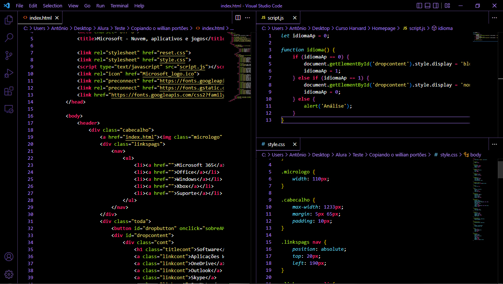

Programação

Em 2020, surgiu o interesse no ramo da programação, e aprendeu um pouco sobre na internet, porém não avançando muito.
No ano de 2022, começou a cursar o 1º ano do Ensino Médio, mesmo ano em que foi implementado o Novo Ensino Médio no estado do Paraná, onde mora, e entre as mudanças está a adição da disciplina de Pensamento Computacional, junto com isso, teve acesso a cursos de programação disponibilizados pelo governo, onde aprendeu diversos conceitos e linguagens como HTML, CSS e JavaScript, e seguiu pesquisando na área.
Em julho do mesmo ano, teve a oportunidade de realizar o curso de Ciência da computação da Universidade de Harvard (CS50), que segue cursando desde então.